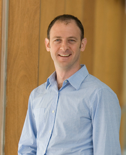

News Archives : 2011 : D'Souza and Leschziner Promoted to Associate Professor
by Cathryn Delude
September 27, 2011

Andres Leschziner
Victoria D'Souza
The Department of Molecular and Cellular Biology is pleased to announce the promotion of Victoria D'Souza and Andres Leschziner to Associate Professor.
"The MCB department unanimously supported the promotion of Victoria D'Souza and Andres Leschziner to the rank of Associate Professors of Molecular and Cellular Biology based on their stellar research, in the study of retroviral RNAs for Victoria D'Souza, in the study of large multi-protein machines by cryo-EM for Andres Leschziner, as well as on the excellence of their teaching and wonderful citizenship in the Department," says Catherine Dulac, MCB Department chair.
Victoria D'Souza was born and educated in India, and came to the United States for her doctoral studies at University of Maryland at Baltimore County. She joined the MCB faculty at Harvard in 2006. She is a virologist who applies structural biology to discover the basis of how retroviruses, which are associated with clinical diseases like leukemia, tumors, and HIV/AIDS, replicate. The long-term goal of her laboratory is to understand structures and functions of retroviral RNAs. Retroviral RNAs form structurally organized domains that play a critical role during various stages of the life cycle, including, reverse transcription, mRNA transcription, protein translation and genome recognition. To study the structure of retroviral RNA and protein molecules involved in these processes, D'Souza uses nuclear magnetic resonance (NMR), a technique for determining a compound's molecular structure based on how its atoms absorb electromagnetic radiation. These structures should ultimately lead to detailed models of retroviral replication.
Andres Leschziner joined the MCB faculty in 2007 after post-doctoral studies at University of California Berkeley. He received his Ph.D. from Yale University and his B.Sc. from McGill University. His lab investigates the role of conformational flexibility in the biological activity of macromolecular complexes using a combination of biochemical and structural approaches. Leschziner wants to understand the mechanism of ATP-dependent chromatin remodeling, a process in which large macromolecular assemblies use the energy of ATP hydrolysis to alter the structure of nucleosomes. He is also exploring the mechanism of processive movement by cytoplasmic dynein, a large microtubule-based motor responsible for the majority of cellular transport from the periphery towards the cell interior and for aspects of chromosome segregation during cell division. To study conformational dynamics, he uses single-particle cryo-electron microscopy, a technique that allows him to observe these complexes in their natural state, without staining or fixing. His group is also developing methodologies for electron microscopy for studying the generation of initial reconstructions from complex mixtures of macromolecules.
[September 27th, 2011]